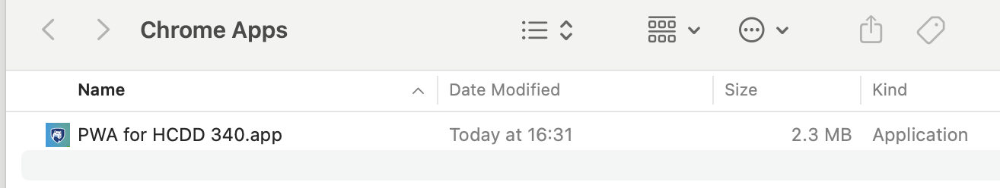
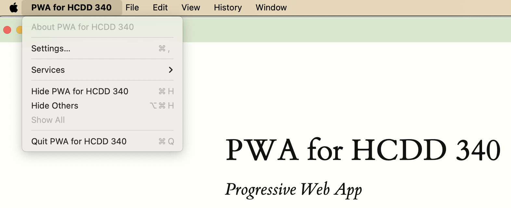
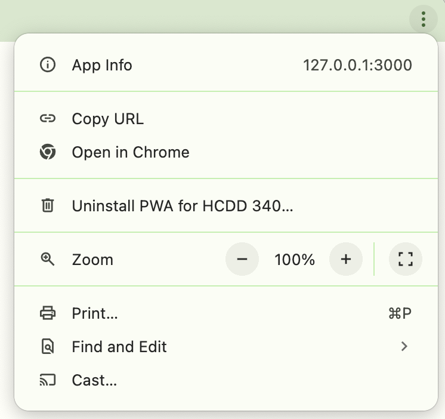
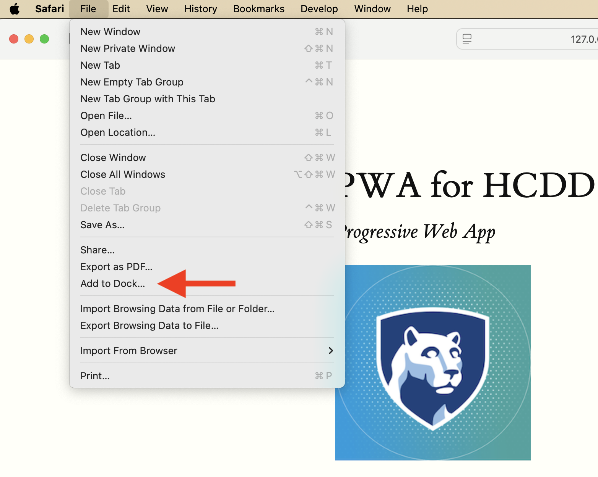

JS I
Recap from last class
- Responsive design
- PWA manifest
Responsive Web Design (RWD)
- Fluid layout
- Responsive images and media
- Media queries
meta element for
viewport
<meta name="viewport"
content="width=device-width, initial-scale=1">Prevents the default scaling
meta element for
viewport
<meta name="viewport"
content="width=device-width, initial-scale=1">width=device-width- Website width is the same as the device width
- i.e., not necessarily 980 px
initial-scale=1- don’t do any scaling
- not necessary for responsive design
meta element for
viewport
meta
tagResponsive Web Design (RWD)
Fluid layout
- Flexbox
- Grid
Responsive Web Design (RWD)
- Fluid layout
- Responsive images and media
- Media queries
Responsive images and media
img {
max-inline-size: 100%;
}Should be contained within their container
Responsive images
Common pattern
img {
/* Contained within the parent */
max-inline-size: 100%;
/* aspect ratio is maintained */
block-size: auto;
/* crop the image if needed to
preserve aspect ratio */
object-fit: cover;
/* How to crop (i.e., where is the
most important part) */
object-position: top center;
}Responsive images
srcset
- Same image but with different sizes
- Saves data and loading time for small devices
- Resources
Responsive Web Design (RWD)
- Fluid layout
- Responsive images and media
- Media queries
Media queries
- Selectively apply CSS rules
- For different device properties (“query”)
@media type and (feature)- type: all (default), print, screen
Media queries
body {
color: black;
background-color: grey;
}
@media print {
body {
background-color: transparent;
}
}Transparent background when printing
Media queries
@media (orientation: landscape) {
/* Styles for landscape mode. */
}
@media (orientation: portrait) {
/* Styles for portrait mode. */
}Media queries
min-width
@media (min-width: 400px) {
/* Styles for viewports wider than 400 pixels. */
}Media queries
<=
@media (width <= 400px) {
/* Styles for viewports narrower than 400 pixels. */
}Combining media queries
and
@media (min-width: 50em) and (max-width: 60em) {
/* Styles for viewports
wider than 50em
and narrower than 60em. /*
}Combining media queries
@media (50em <= width <=60em) {
/* Styles for viewports
wider than 50em
and narrower than 60em. */
}Combining media queries
or and not
@media not ((width >= 30em) or (orientation: landscape)) {
/* These styles won't be shown
if the viewport is wider than 30em,
or if the orientation is landscape. */
.navlist {
flex-direction: column;
}
}Recap from last class
- Responsive design
- PWA manifest
Progressive Web Apps
- User experience like a platform-specific app
- Installable
Manifest in PWA
- A JSON file
- Information about the app
- name, icons, …
- Required for installation
Manifest in PWA
{
"short_name": "CT",
"start_url": "/",
"icons": [
{
"src": "icon-512.png",
"sizes": "512x512"
}
],
"display": "standalone"
}Installation
- Copy the URL from Live Preview (VS Code)
- Open the URL in Chrome
Installation

Install the PWA in Chrome
PWA Installed

Settings similar to native apps

Uninstall the app

Edge
- You can install using Safari and Edge as well
- Copy the URL from Live Preview
- Edge uses similar steps to Chrome
Safari

File –> Add to Dock
PWA Installability
- Different browsers can have different requirements
Must have a manifest
<link rel="manifest" href="manifest.json" />Each page must link to a manifest file
Manifest must have
- For Chromium-based browsers
nameorshort_name- A 192px and a 512px icon
start_urldisplay
PWA Installability
https or localhost
- Must be served:
- over https
- or,
localhost(or127.0.0.1)
- If you open
index.htmldirectly in Chrome, it won’t be installable - That’s why we are using Live Preview URLs
Todo
- Open Activity 09 in VS Code
- Copy the URL from Live Preview
- Open the URL in Chrome
- DevTools –> Application –> Manifest
Todo
- How does the app change for different
displayvalues?standaloneminimal-uifullscreenbrowser
Media query for display mode
/* app within the browser only */
@media (display-mode: browser) {
}
/* app in standalone mode */
@media (display-mode: standalone) {
}
Media query for display mode
/* All app modes */
@media (display-mode: standalone),
(display-mode: fullscreen),
(display-mode: minimal-ui) {
}Todo
Different UI for app vs browser
Hints
::afterthe image (example)\Aincontentfor a new line
Today
JS
- Variables
- Conditionals
- Loops
- Strings
- Arrays
- Functions
JS
- We will use “modern”-ish version (ES6)
Great resource

Variables
const, let,
var
const x = 1;
let y = 2;
var z = 3;var
Global variable
var x = 1;
if (x === 1) {
var x = 2;
console.log(x);
// expected output: 2
}
console.log(x); // expected output: 2let
let y = 1;
if (y === 1) {
let y = 2;
console.log(y);
// expected output: 2
}
console.log(y); // expected output: 1Local variable (within the block)
const
Once assigned, can’t change values
Todo
const z = 1;
if (z === 1) {
z = 2;
console.log(z);
}
console.log(z);- Run in the DevTool Console
- What happens here?
Today
JS
- Variables
- Conditionals
- Loops
- Strings
- Arrays
- Functions
Conditionals
if (condition) {
/* code to run if condition is true */
} else {
/* run some other code instead */
}Equality check in JS 😬

Equality check in JS
- Prefer === and !==
- Instead of
==and!= - why
- Instead of
if-else
if (choice === "sunny") {
s = "Wear shorts!";
} else if (choice === "rainy") {
s = "Take umbrella";
} else {
s = "";
}Nesting if-else
if (choice === "sunny") {
if (temp >= 70) {
s = "Wear shorts!";
} else if (temp <= 40) {
s = "Pants!";
} else {
s = "Your choice!"
}
}Logical operators
&&(and)- all conditions must be true
||(or)- at least one condition is true
!(not)- negate the value
Logical operators
if ((choice === "sunny") && (temp >= 70)) {
s = "Wear shorts!";
}
Today
JS
- Variables
- Conditionals
- Loops
- Strings
- Arrays
- Functions
Loops
for
for (initializer; condition; final-expression) {
// code to run
}Loops
for
for (let i = 1; i < 10; i++) {
// code to run
}while
initializer
while (condition) {
// code to run
final-expression
}while
let N = 10;
let i = 0;
while (i < N) {
// code to run
i++;
}do-while
initializer
do {
// code to run
final-expression
} while (condition)do-while
let N = 10;
let i = 0;
do {
// code to run
i++;
} while (i < N);Todo
- Open Activity
10 in VS Code
- View –> Output –> Embedded Live Preview Console
- Change
main.js- Print numbers from 1 to 20; except for
- numbers divisible by 3, print “IST!”
- numbers divisible by 5, print “HCDD!”
Hints
- You can use
forloop console.logwill print valuesremainder(%) operator can check for divisibility:
if (X % 3 === 0){
// divisible by 3;
}Todo
- What happens for 15?
Today
JS
- Variables
- Conditionals
- Loops
- Strings
- Arrays
- Functions
Strings
Handling text in JS
const single = 'Single quotes';
const double = "Double quotes";
const backtick = `Backtick`;
console.log(single);
console.log(double);
console.log(backtick);Concat strings
const greeting2 = "Hello";
const name2 = "HCDD 340!";
console.log(greeting2 + ", " + name2); // "Hello, HCDD340!"Template literal
- Strings declared using backticks
- Can embed JavaScript
- Can span multiple lines
Template literal
Embed JS
- Variables or expression within
${ }- Result will replace
${ }
- Result will replace
Template literal
const name = "HCDD 340";
const greeting = `Hello, ${name}`;
console.log(greeting);Todo
const one = "Hello, ";
const two = "how are you?";
const joined = `${one}${two}`;
console.log(joined);Template literal
Multiline strings
const newline = `One day you finally knew
what you had to do, and began,`;
console.log(newline);
/*
One day you finally knew
what you had to do, and began,
*/
Line breaks are maintained
Todo
const college = "IST";
const score = 9;
const highestScore = 10;
const output = `I like my experience in ${college}.
I gave it a score of ${
(score / highestScore) * 100
}%.`;
console.log(output);Strings
Today
JS
- Variables
- Conditionals
- Loops
- Strings
- Arrays
- Functions
Arrays
List of values
const sequence = [1, 1, 2, 3, 5, 8, 13];Length
const sequence = [1, 1, 2, 3, 5, 8, 13];
console.log(sequence.length);Todo
const random = ["tree", 795, [0, 1, 2]];
console.log(random.length);What’s the output?
Accessing items
const shopping = ["bread", "milk", "cheese",
"hummus", "noodles"];
console.log(shopping[0]);Index starts at Zero
Change items
const shopping = ["bread", "milk", "cheese",
"hummus", "noodles"];
shopping[0] = "tahini";
console.log(shopping[0]);Todo
const random = ["tree", 795, [0, 1, 2]];Change the last item (2) to -2
Adding items
push–> adds at the endunshift–> add at the front
const cities = ["Manchester", "Liverpool"];
cities.push("Cardiff");
console.log(cities);
// [ "Manchester", "Liverpool", "Cardiff" ]
cities.push("Bradford", "Brighton");
console.log(cities);
// [ "Manchester", "Liverpool", "Cardiff", "Bradford", "Brighton" ]Adding items
unshift
const cities = ["Manchester", "Liverpool"];
cities.unshift("Edinburgh");
console.log(cities);
// [ "Edinburgh", "Manchester", "Liverpool" ]unshift –> add at the front
Removing items
pop–> from the endshift–> from the front
const cities = ["Manchester", "Liverpool"];
const removedCity = cities.pop();
console.log(removedCity); // "Liverpool"Removing items
shift
const cities = ["Manchester", "Liverpool"];
cities.shift();
console.log(cities); // [ "Liverpool" ]shift –> from the front
Iterating array values
for loop
const arr = [1, 2, 3, 4];
for (let i = 0; i < arr.length; i++) {
console.log(arr[i]);
}
Iterating array values
for-of loop
for (let element of arr) {
console.log(element);
}
Arrays
Today
JS
- Variables
- Conditionals
- Loops
- Strings
- Arrays
- Functions
Functions
function myFunction() {
alert("hello");
}
myFunction();
// calls the function onceParameters
function addition(a, b) {
return a + b;
}
console.log(addition(1, 2));Default parameters
function addition(a, b=10) {
return a + b;
}
console.log(addition(9));
console.log(addition(9, 3));Arrow function
const myAddition = (a, b = 10) => {
return a + b;
}
console.log(myAddition(9));
Arrow function
const oneLiner = (a, b) => a + b;
console.log(oneLiner(12, 5));Arrow function
const noParam = () => {
console.log("hello");
}Todo
- Open Activity 11 in VS Code
- Update
main.js(see hints on line 23–27)
Todo
- Add a function called
chooseCollege- using arrow syntax
- When called the function
- it should select a random item from
colleges - update the
<h4>with the selected items
- it should select a random item from